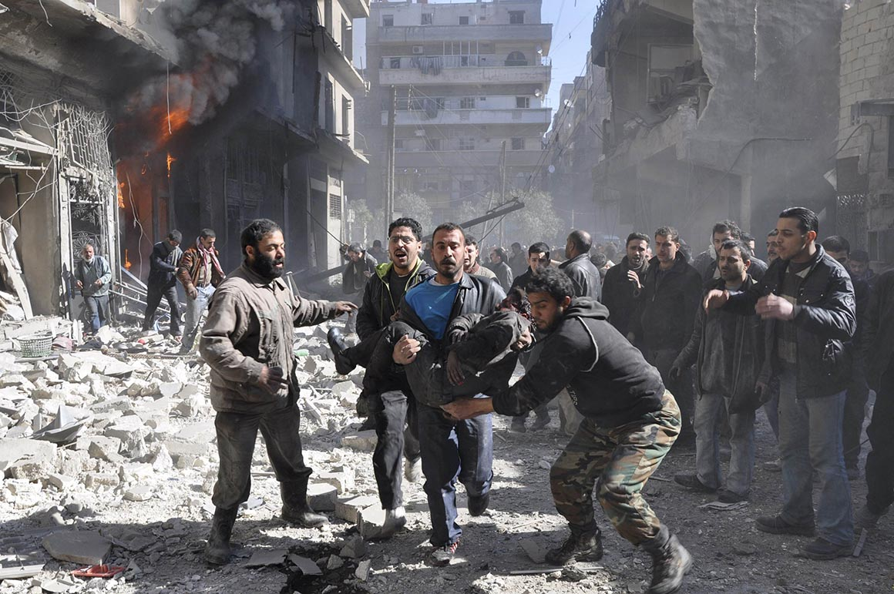
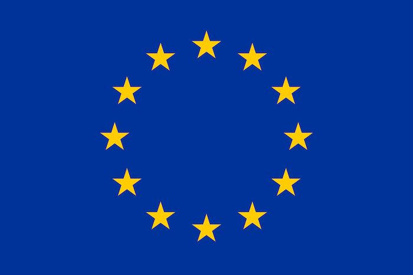

<!DOCTYPE html>
<html>
  <head>
    <link rel="stylesheet" type="text/css" href="../css/index.css">
    <script src="https://ajax.googleapis.com/ajax/libs/jquery/3.3.1/jquery.min.js"></script>
    <script src="node_modules/marked/marked.min.js"></script>
  </head>
  <body>
    <div id="content"></div>
  <script src="https://cdn.jsdelivr.net/npm/marked/marked.min.js"></script>
  <script>
    document.getElementById('content').innerHTML =
      marked("# European Migrant Crisis\n\n ## By Tom Lister\n\n ## The Issue\n\n In 2011 Syria's political situation kindled and sparked into a deadly civil war, inciting persecution and violence causing hundreds of thousands, even millions of people to flee their war-torn countries to seek refuge in the European Union. In 2015 the influx of asylum seekers traveling across the Mediterranean Sea to Europe spiked. The image below illustrates the flow of displaced people migrating out of their countries and into Europe, it also shows the distribution of migrants in Europe for example: Germany has received the most migrants than any other European country.\n\n </img> \n\n ###### Maximilian Dörrbecker https://de.wikipedia.org/wiki/User:Chumwa \n\n ## Forced or Voluntary?\n\n The situation in Syria has caused thousands of innocent people to lose their lives, it's very much a life or death situation to flee to the EU. \n\n ### At least 28,277 people have been killed in deadly mass shootings and attacks in Syria. \n\n  It's hard to decide if it's forced or voluntary, no ones forcing them to stay where they are, they can either stay and get killed by mortar or leave and go to Europe. But considering the circumstances I'd say it's definitely forced migration.\n\n </img> \n ##### Shelling from forces loyal to President Bashar Al-Assad in Aleppo’s Bustan al-Qasr neighborhood. \n\n ###### Yaman Al Halabi/Reuters https://www.reuters.com/\n\n ## Push Factors\n\n An unstable political situation in Syria has caused a civil war between 50+ different combatants, this has caused the infrastructure in Syria to collapse, literally, hospitals and other buildings are reduced to rubble by mortar and RPGs, 95% of people have a lack of healthcare and around 70% lack access to clean water. \n\n #### Economy \n\n The economy in Syria is basically non-existent, this because of the civil war, all of the [international sanctions](http://sanctionswiki.org/Syria) placed on the country, and lack of infrastructure. \n\n #### Poverty \n\n People who have internally displaced or have had their homes destroyed have had to move and live in terrible conditions, they do not have access to safe, clean water and their buildings are not structurally sound. Most are without electricity, due to destroyed or lack of infrastructure.  \n\n### Summary \n\n * War, persecution and violence. \n\n * Unstable political situation. \n\n * Lack of infrastructure. \n\n * Non-existent economy. \n\n\n </img> \n\n ###### Reuters https://www.reuters.com/\n\n ## Pull Factors \n\n The European Union has closed external borders (that are decently protected) but open internal borders allowing for anyone to migrate from country to country quickly, once migrants cross the border into a European country they can pass through to any other EU country without any checks. Europe is a dream for anyone looking to get away from their war-torn country, they have lots of employment opportunities, are mainly social democratic welfare states, which means they provide welfare and other services for free. Also the people in Europe are generally very accepting of refugees (from what I've heard from people), except if they commit crimes (then the government just covers it up, _I'm looking at you Sweden_). \n\n### Summary \n\n * Employment opportunities. \n\n * Open internal borders. \n\n * Acceptance into society. \n\n * Welfare. \n\n * Freedom. \n\n * Better than nothing. \n\n\n ## Additional \n\n In the EU, refugees and asylum seekers must apply for asylum in the EU, there are a lot of applications that haven't been accepted each month, however that number is decreasing. The table below shows the amount of people at the end of each month who are waiting for their application to be accepted. \n\n ### Table \n\n | Location | 2017-11 | 2017-12 | 2018-1 | 2018-2 |\n|----------|---------|---------|--------|--------|\n|    EU    | 932,970 | 926,990 |894,285 |832,195 |\n\n</img> \n\n ###### Council of Europe https://www.coe.int/\n\n ### Thanks for Reading! \n\n <br><br> \n\n ## Bibliography \n\n\ https://www.nytimes.com/interactive/2015/09/14/world/middleeast/syria-war-deaths.html \n\n https://en.wikipedia.org/wiki/European_migrant_crisis \n\n https://en.wikipedia.org/wiki/Syrian_Civil_War \n\n http://www.unhcr.org/en-au/europe-emergency.html \n\n http://ec.europa.eu/eurostat/statistics-explained/index.php/Asylum_statistics");
  </script>
  </body>
</html>
